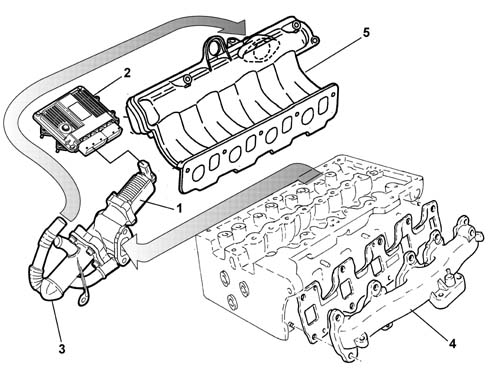
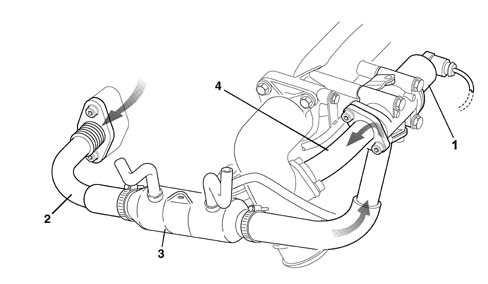
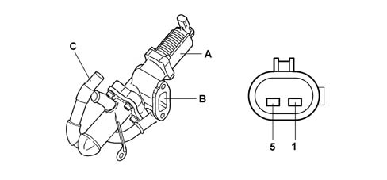
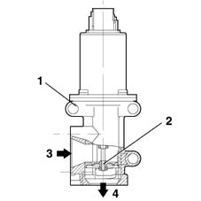

1080C exhaust gas recirculation system (e.g.r.)
- Path
- Descriptions > 10 ENGINE > 1080 EMISSION CONTROL SYSTEM > 1080C exhaust gas recirculation system (e.g.r.)
- Kind
- system description
- Applies to
- all engines; all production periods
- Interactive page
- https://sloeber94.github.io/elrnDB-fDbl/en/#/2582313
Applies to: all engines; all production periods
This system directs a proportion of exhaust gases (5 - 15%) to the intake under certain service conditions.
This lowers the temperature peak in the combustion chamber to reduce the formation of nitrogen oxides (NOx).
The E.G.R. valve (1) is controlled by the fuel injection control unit (2), and carries out the function of re-injecting into the engine intake some of the exhaust gases drawn from the exhaust manifold (4).
A heat exchanger (3) allows the partial cooling of the exhaust gases, further lowering the temperature in the combustion chamber.

1 - E.G.R. valve 2 - Fuel injection control unit 3 - Heat exchanger 4 - Exhaust manifold 5 - Air inlet manifold
Applies to: all engines; all production periods
CONSTRUCTION FEATURES
This system directs a proportion (5-15%) of the exhaust gases to the intake under certain service conditions.
This dilutes the fuel mixture with the inert gases lowering the peak temperature in the combustion chamber; this restricts the formation of nitrogen oxides (NOx) causing a 30-50% reduction at the exhaust.
Applies to: all engines; all production periods
The fuel injection control unit, with coolant temperature > 20° C and engine speed of between 800 and 3000 rpm, drives the E.G.R. solenoid with a square-wave signal.
The change in this signal allows the EGR coil to move a plunger and thus adjust the flow of burnt gases from the exhaust manifold to the intake manifold; two results are thus obtained:
- less air is introduced;
- combustion temperature is reduced (due to the presence of inert gases) to reduce NOx (nitrogen oxide) production.
The engine control unit is kept constantly informed of recirculated gas quantity by information from the flow meter. If the intake of a certain amount of air (Qam) rpm is required at a certain rpm and the amount sent by the flow meter (Qar) is less, the difference (Qgr) is the recirculated gas quantity.
Qam - Qar = Qgr
Qam - Theoretical air quantity in memory
Qar - True air quantity
Qgr - Recirculated gas quantity
The atmospheric pressure signal is used when controllling the EGR valve to recognize when the car is driving at altitude and so reduce the quantity of recirculated gas and prevent the engine from producing fumes.
Applies to: all engines; all production periods
COMPOSITION
The system consists of:
- an EGR Pierburg solenoid valve (1) that is controlled by the engine management control unit;
- the pipe coming from the exhaust manifold (2) (from which the exhaust gases come)
- an air/water heat exchanger (3) (that lowers the temperature of the exhaust gases);
- the pipe connected to the throttle casing (4) where the exhaust gases are introduced.

Applies to: all engines; all production periods
E.G.R. SOLENOID VALVE
The Pierburg EGR valve fitted on the cylinder head modulates the flow of exhaust gas to the intake according to a command received from the injection control unit.
Modulation takes place via an internal solenoid controlled in PWM by the control unit, which operates the control rod from the internal valve which, when open, conveys the gases into the inlet manifold.

A - E.G.R. valve body B - Gas inlet from exhaust manifold C - Gas outlet to inlet manifold 1 - Solenoid positive 5 - Solenoid negative
Applies to: all engines; all production periods
OPERATION
When coolant temperature is > 20C and engine speed is between 800 and 3000 rpm, the engine control unit governs the EGR solenoid by means of a square wave signal.
The change in this signal allows the EGR coil to move a plunger and thus adjust the flow of burnt gases from the exhaust manifold to the intake manifold; two results are thus obtained:
- less air is introduced
- combustion temperature is reduced (due to the presence of inert gases) to reduce NOx (nitrogen oxide) production.
The engine control unit is kept constantly informed of recirculated gas quantity by information from the flow meter. If the intake of a certain amount of air (Qam) rpm is required at a certain rpm and the amount sent by the flow meter (Qar) is less, the difference (Qgr) is the recirculated gas quantity.
Qam - Qar = Qgr
Qam = theoretical air quantity in memory
Qar = true air quantity
Qgr = recirculated gas quantity
The atmospheric pressure signal is used when controllling the EGR valve to recognize when the car is driving at altitude and so reduce the quantity of recirculated gas and prevent the engine from producing fumes.
Applies to: all engines; all production periods
SPECIFICATIONS
The Pierburg EGR valve fitted to the intake manifold modulates the flow of exhaust gas to the intake according to a command received from the injection control unit.
Modulation takes place via an internal solenoid controlled in PWM by the control unit, which operates the control rod from the internal valve.

1, EGR valve body 2, Internal valve 3, Gas intake from the exhaust manifold (via the air/water heat exchanger) 4, Gas outlet to inlet manifold